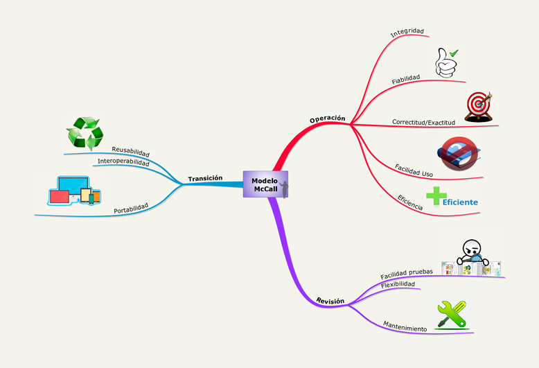

Modelo McCall
El modelo de evaluación de McCall fue uno de los primeros modelos en ser creados para dicho fin; éste nació en el año 1977. Este es un modelo que está considerado desde la percepción del usuario y propone una serie de factores los cuales son conocidos como factores de McCall. Este modelo busca realizar una descomposición del concepto genérico de calidad en 3 capacidades importantes las cuales son: Revisión, Operación y Transición.
El modelo de McCall se centra en tres aspectos importantes de un producto de software:
- Sus características operativas/Operación del Producto
- Su capacidad para soportar los cambios/Revisión del Producto
- Su adaptabilidad a nuevos entornos/Transición del producto
Lista de factores:
Operación del producto
• Corrección: Mide el grado en que un programa satisface sus especificaciones y consigue los objetivos del usuario.
• Fiabilidad: mide el grado en que se puede esperar que un programa lleve a cabo sus funciones esperada con la precisión requerida.
• Eficiencia: mide la cantidad de recursos de computadora y de código requerido por un programa para que lleve a cabo las funciones especificadas.
• Integridad: es el grado en que puede controlarse el acceso al software o a los datos por personal no autorizado.
• Facilidad de Uso: es el esfuerzo requerido para aprender un programa e interpretar la información de entrada y de salida.
Revisión de producto
• Facilidad de Mantenimiento: es el esfuerzo requerido para localizar y arreglar programas.
• Facilidad de Prueba: es el esfuerzo requerido para probar un programa.
• Flexibilidad: es el esfuerzo requerido para modificar un sistema operativo.
Transición de producto
• Portabilidad: es el esfuerzo requerido para transferir un software de un hardware o un entorno de sistemas a otro.
• Reusabilidad: es el grado en que un programa (o partes de un programa) se puede reutilizar en otro.
• Facilidad de Interoperación: es el esfuerzo requerido para asociar un programa a otro.